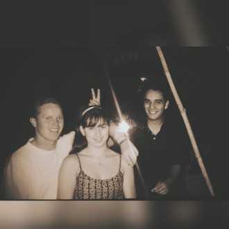

Fases da Vida #Adolescência
Um período da Vida que estamos nos conhecendo, uma fase boa!..
Meu pequeno afilhado (rz) .. hoje com um pouco mais de 2 metros.
Carnaval em Recife, foram 10 dias de viagem (entre ida e volta), que loukuraaa.
Diversão nos dias de chuva, correr e pular para escorregar no quintal.

Logo quando conheci a dona patroa ... meu brother que me apresentou.